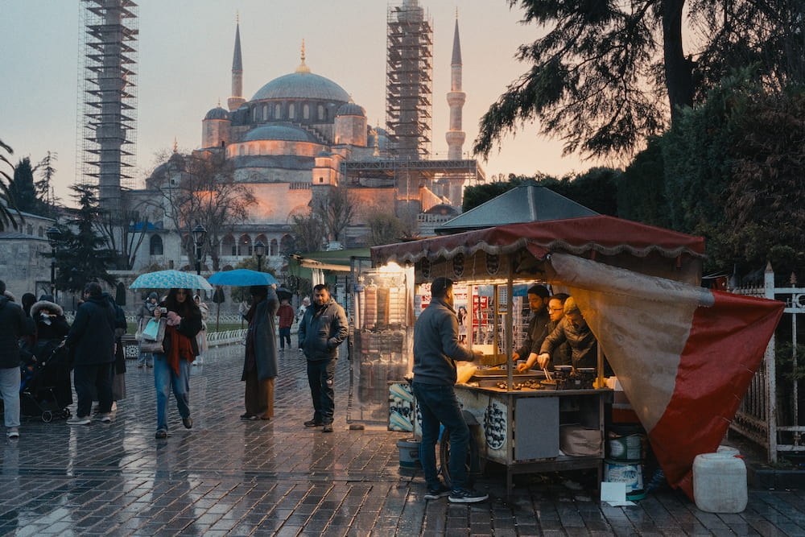
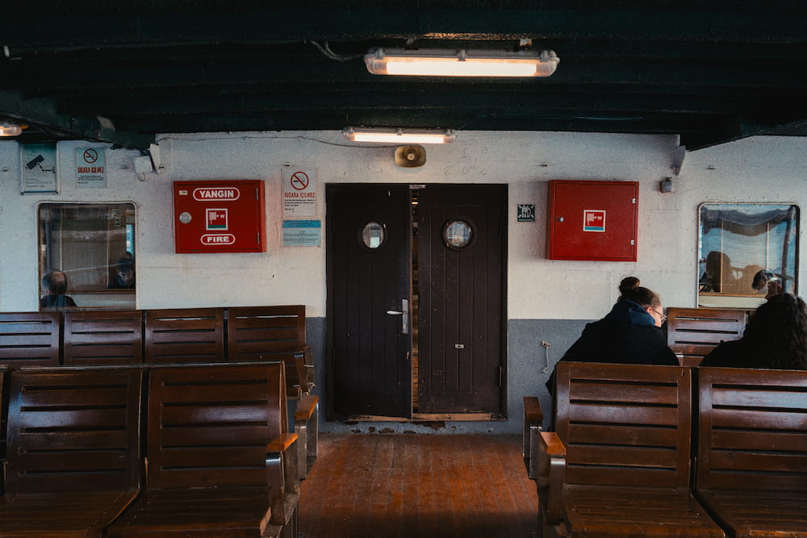
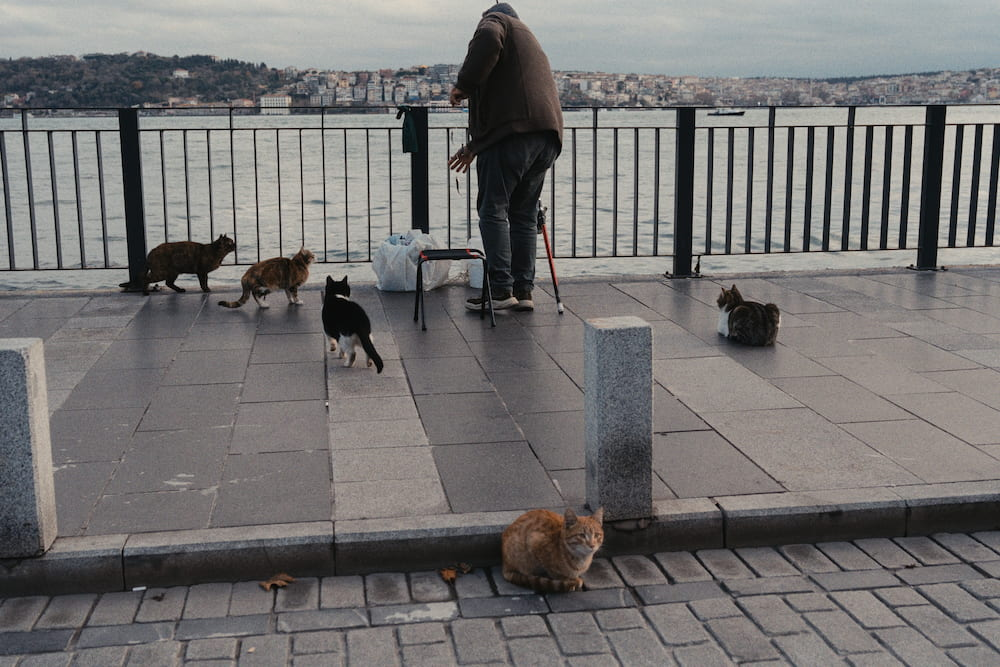

Photos
Pictures I took with my camera and want to keep, one set per trip. Click one to see it large.
- Istanbul, 2025 3 photos
Istanbul, 2025
Three frames from a set of twenty-three.






Pictures I took with my camera and want to keep, one set per trip. Click one to see it large.
Three frames from a set of twenty-three.


